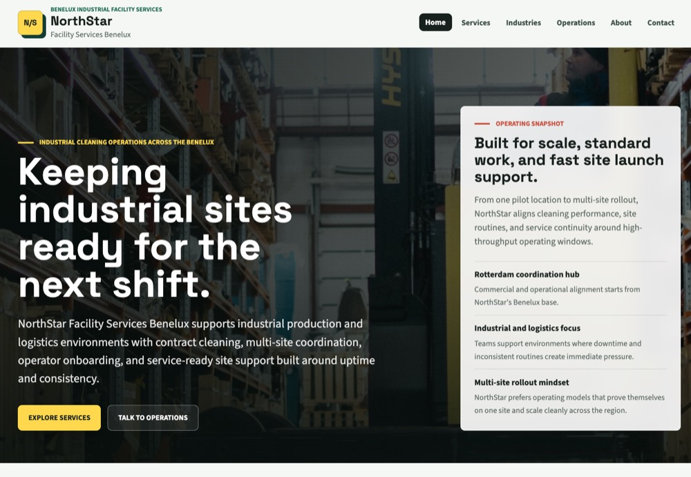
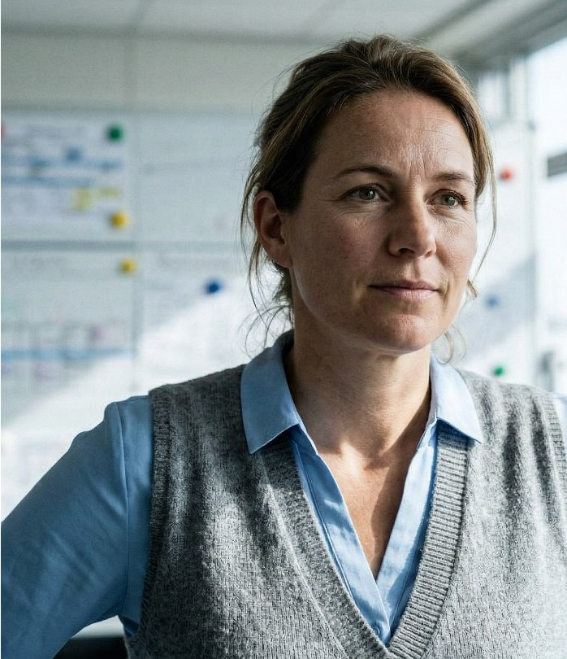

Kärcher · Foundations
The NorthStar example
The made-up account we use to show what good looks like.
What it is
One example account, worked end to end
NorthStar Facility Services is a fictional facility and contract-cleaning company in Rotterdam (Benelux), in one of Kärcher's target industries. We follow this one account through the whole training.
The opportunity we work is a pilot of three battery scrubber driers (the Kärcher BR 45/22). Every step, from first research to follow-up, is worked through on NorthStar, so you see a finished, good example before doing it on a real account.
- It's made up on purpose: examples use a safe, fictional account, never real customer data.
- Use it as a model, compare your own output for each step against the NorthStar version.
- It's one consistent account, so the whole cycle joins up instead of jumping between examples.

The buying center
Four people shape the deal
Real deals are rarely decided by one person. At NorthStar, four people shape the decision, each with a different stake.

Lars Meijer
Regional Operations Director · Decision-maker
Uptime, less disruption, a smooth rollout

Sophie Verbeek
Procurement Manager · Purchasing
Service value, cost structure, a defendable offer
Milan Bakker
Site Service Supervisor · User
Daily floor routines, usability under pressure

Eva van Dijk
HSE / Service · Secondary
Safe rollout, response time, training quality
Quick check
Why do we use a made-up account like NorthStar for the examples?
Keep this
Foundation 8 done
Foundations · learn the basics first